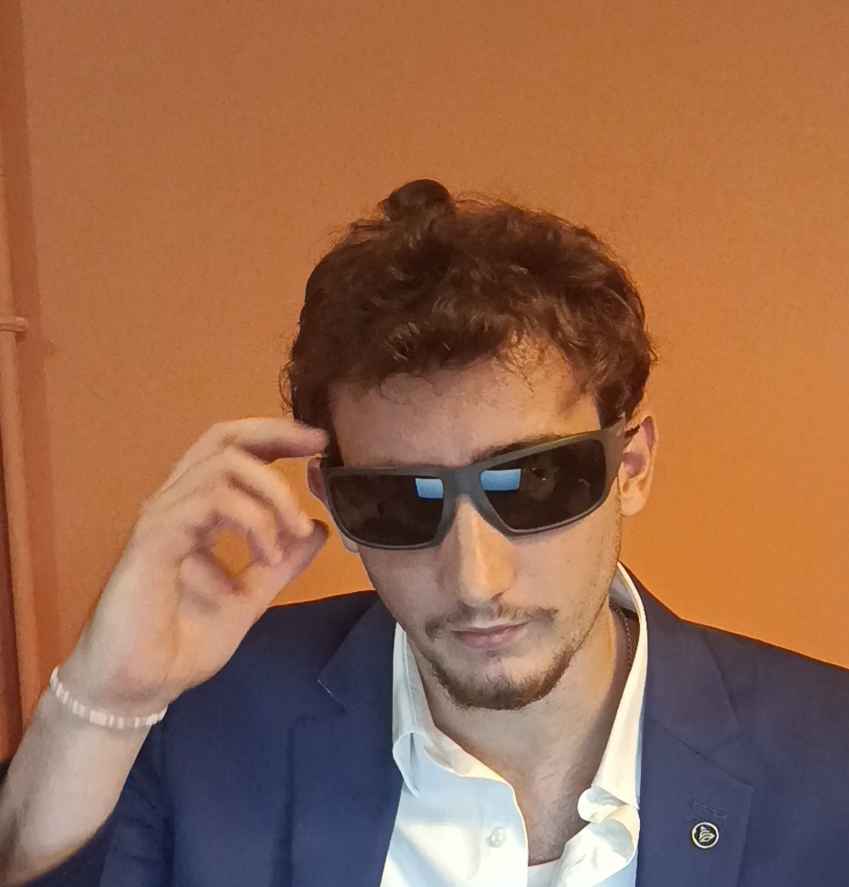

Who am I?
Qui suis-je ?
I'm Martin Chaubet, from Perpignan in the south of France. I'm currently a first-year engineering student at ENSEEIHT (Toulouse INP-N7), studying Digital Sciences.
Je m'appelle Martin Chaubet, je viens de Perpignan, dans le sud de la France. Je suis actuellement étudiant en première année d'école d'ingénieurs à l'ENSEEIHT (Toulouse INP-N7), en Sciences du Numérique.
Staying in the south is a blessing: I get to enjoy summer half of the year. I live outdoors. When I'm not at school, I run, play other sports, see friends and go to the mountains (I just don't see the sea as often as I used to).
Rester dans le sud est une chance : je profite de l'été la moitié de l'année. Je vis dehors. Quand je ne suis pas en cours, je cours, je pratique d'autres sports, je vois mes amis et je vais à la montagne (je vois simplement moins souvent la mer qu'avant).
This e-portfolio is a way for you to get to know me: how I think, what I want to do in the future, my qualities and flaws, and even what I eat.
Cet e-portfolio est une façon de me connaître : ma façon de penser, ce que je veux faire plus tard, mes qualités et mes défauts, et même ce que je mange.
MathematicsMathématiques Big Data SportsSport TravelVoyages
Introduction video
Vidéo de présentation
Engineering Courses
Cursus d'ingénieur
Two projects I saw through to the end, both written in Python.
Deux projets que j'ai menés jusqu'au bout, tous deux réalisés en Python.
Study of the fluidification of a cellular automaton representing a forest fire
Étude de la fluidification d'un automate cellulaire représentant un feu de forêt
Python · TIPE · Individual project
Python · TIPE · Projet individuel
I carried out this project on my own. It rethinks how cellular automata work in order to get a smoother simulation.
J'ai réalisé ce projet seul. Il repense le fonctionnement des automates cellulaires afin d'obtenir une simulation plus fluide.

Click the image to open the presentation (PDF, in French).
Clique sur l'image pour ouvrir la présentation (PDF).
Study of the return to the initial state of a deck of cards (through the riffle shuffle)
Étude du retour à l'état initial de la disposition d'un jeu de cartes (à travers le mélange Riffle Shuffle)
Python · TIPE
This project has no particular practical use: it is mainly theoretical and takes the study of card shuffling to its extreme.
Ce projet n'a pas d'application concrète particulière : il est principalement théorique et pousse l'étude des mélanges de jeux de cartes à son paroxysme.

Click the image to open the presentation (PDF, in French).
Clique sur l'image pour ouvrir la présentation (PDF).
What these projects gave me
Ce que ces projets m'ont apporté
These projects helped me a lot in computer science throughout my two years of preparatory classes (prépa). They are, in a way, what guided my choice of school. I enjoyed modeling real-world systems using nothing but my computer and Python.
Ces projets m'ont beaucoup aidé en informatique tout au long de mes deux années de prépa. Ce sont eux qui ont, en quelque sorte, orienté mon choix d'école. J'ai pris énormément de plaisir à modéliser des systèmes réels uniquement avec mon ordinateur et Python.
Mobility
Mobilité
Studying and living abroad: my experience and my plans.
Étudier et vivre à l'étranger : mon expérience et mes projets.
Where I've been
Mes voyages
I have traveled abroad several times, with or without my parents, including to Canada, Portugal, Brazil, Scotland and Spain, and I went surfing in every one of these countries.
J'ai voyagé plusieurs fois à l'étranger, avec ou sans mes parents, notamment au Canada, au Portugal, au Brésil, en Écosse et en Espagne, et j'ai fait du surf dans chacun de ces pays.
My plans
Mes projets
I am certain that I will spend some time abroad during my studies, and I will choose my destination mainly to discover a country that makes me dream. I could easily see myself living in Sweden or another Nordic country, because I tend to avoid the heat, which I find stifling in France.
Je suis certain que je ferai un séjour à l'étranger pendant mes études, et je choisirai la destination avant tout pour découvrir un pays qui me fait rêver. Je me verrais bien vivre en Suède ou dans un autre pays du Nord, car je fuis un peu la chaleur, qui m'étouffe en France.
One of my goals for the future is to keep surfing in every country I visit, because there is always somewhere you can surf.
Un de mes objectifs pour plus tard est de continuer à surfer dans chaque pays que je visiterai, car il y a toujours un endroit où l'on peut surfer.
(images/mobility1.jpg)Photo d'un lieu
(images/mobility1.jpg)
(images/mobility2.jpg)Photo
(images/mobility2.jpg)
Civic Engagement
Engagement citoyen
How I contribute to the life around me.
Comment je m'investis dans la vie qui m'entoure.
School life
La vie de l'école
I am very involved in school life.
Je m'implique énormément dans la vie de l'école.
Awareness races
Courses de sensibilisation
I take part in awareness-raising races as often as I can, for example the Bacchantes race for prostate cancer or the Pink Race (Course Rose) for breast cancer.
Je participe autant que possible à des courses de sensibilisation, par exemple la course des Bacchantes pour le cancer de la prostate ou la Course Rose pour le cancer du sein.
(images/civic1.jpg)Photo
(images/civic1.jpg)
Sports & Activities
Sport & activités
What I do outside the classroom.
Ce que je fais en dehors des cours.
Pushing my limits
Me surpasser
I like to push myself beyond my limits, which is why I do as many sports as I can: running, swimming, hiking and boxing, which I practice at N7. Doing a sport on your own means coming face to face with yourself.
J'aime me surpasser, c'est pourquoi je pratique un maximum de sports : la course à pied, la natation, la randonnée et la boxe, que je pratique à l'N7. Pratiquer un sport seul permet de se retrouver face à soi-même.
Team sports
Sports d'équipe
I also enjoy playing team sports for fun whenever possible, such as football (soccer), rugby or volleyball. They give you the chance to talk, meet people and share a good time with others.
J'aime aussi, autant que possible, pratiquer des sports d'équipe pour le loisir, comme le football, le rugby ou le volley. Ils offrent la possibilité d'échanger, de rencontrer des gens et de partager un bon moment avec autrui.
My next goal
Mon prochain objectif
My next goal is to take part in a Hyrox. Before taking the plunge, however, I would like to run a marathon first: the two events complement each other, but they are very hard to train for at the same time.
Mon prochain objectif est de participer à un Hyrox. Avant de me lancer, j'aimerais toutefois réaliser un marathon : ces deux compétitions sont complémentaires, mais très difficiles à travailler de manière simultanée.
(images/sport1.jpg)Photo
(images/sport1.jpg)
(images/sport2.jpg)Photo
(images/sport2.jpg)
Career Development
Projet professionnel
Where I am heading professionally.
Là où je veux aller professionnellement.
Career interests
Mes centres d'intérêt professionnels
I would like to work in Big Data because it embodies the challenges of our time. Computer systems, and engineering in general, are becoming ever more complex, and the amount of information to store and analyze is growing along with them. It is vital to be able to use and preserve as much data as possible, as effectively as possible.
J'aimerais exercer dans le domaine du Big Data, car il incarne les enjeux de notre temps. En effet, les systèmes informatiques, et l'ingénierie en général, sont de plus en plus complexes : la quantité d'informations à stocker et à étudier est donc, elle aussi, en expansion. Il est vital de pouvoir exploiter et conserver au mieux un maximum de données.
In particular, I would like to work in applied mathematics, simply because I love mathematics. Big Data allows me to do that. If I don’t manage to get into this field, I plan to specialize in cybersecurity. Indeed, I did my preparatory classes at a military high school, and I have kept the desire to work in defense. Cybersecurity is the ideal way to combine engineering and defense.
J'aimerais en particulier travailler dans les mathématiques appliquées, tout simplement parce que j'adore les mathématiques. Le Big Data me permet d'en faire. Si je n'arrive pas à rejoindre cette filière, je pense me spécialiser en cybersécurité. En effet après avoir fait ma prépa en lycée militaire, j'ai gardé l'ambition de travailler dans la défense. La cybersécurité est le millieu idéale pour allier ingénierie et défense.
Big Data Applied mathematicsMathématiques appliquées StatisticsStatistiquesSkills
Compétences
- Programming: Python, MATLAB, Ada
- Languages: French (native), English (C1), Spanish (school level), Russian (currently learning)
- Soft skills: I'm known for being very entertaining in any situation, while always staying respectful.
- Informatique : Python, MATLAB, Ada
- Langues : français (langue maternelle), anglais (C1), espagnol (niveau scolaire), russe (en cours d'apprentissage)
- Soft skills : j'ai la réputation d'être très divertissant en toutes circonstances, tout en restant toujours respectueux.